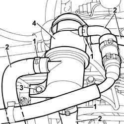
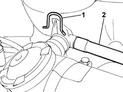
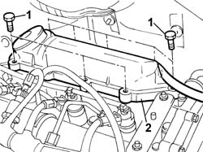
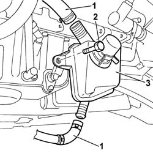
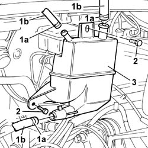

1080D34 ENGINE OIL VAPOUR SEPARATOR - R + R
- Path
- Procedures > 10 ENGINE UNIT > 1080 EXHAUST EMISSION CONTROL SYSTEM > 1080D CRANKCASE VAPOUR/GAS RECIRCULATION SYSTEM > 1080D34 ENGINE OIL VAPOUR SEPARATOR - R + R
- Kind
- repair procedure (removal / refitting; the operation number is the code)
- Applies to
- all engines; all production periods
- Interactive page
- https://sloeber94.github.io/elrnDB-fDct/en/#/244000908
Applies to: engines: 2.0 16V; all production periods
 Removing
Removing
 Refitting
Refitting1. Open the retaining bands.
2. Release the hoses from the separator.
3. Undo the bolts fixing the separator.
4. Remove the separator.

Applies to: engines: 2.0 16V; all production periods
Refitting
Removing- Fit the separator in place and tighten the fixing bolt.
- Fit the pipes on the separator and renew the fastening bands.
Applies to: engines: 2.3 JTD 16V; all production periods
Removing
Refitting1. Lift up the fastening spring.
2. Disconnect the oil vapour pipe.

Applies to: engines: 2.3 JTD 16V; all production periods
1. Undo the fixing bolts.
- Remove the oil vapour separator from the seat in the camshaft housing.

Applies to: engines: 2.3 JTD 16V; all production periods
Refitting
Removing- Fit the oil vapour separator in the seat in the camshaft housing and tighten the fixing bolts.
- Connect the oil vapour pipe to the separator and secure it using the spring.
Applies to: engines: 2.0 JTD 8V; all production periods
Removing
RefittingOp. 7055B54 UNDER-ENGINE GUARD - R R
Op. 5520B10 STARTER MOTOR - R+R
1. Disconnect the two oil vapour recovery pipes.
2. Undo the fixing bolt.
3. Remove the engine oil vapour separator.

Applies to: engines: 2.0 JTD 8V; all production periods
Refitting
Removing- Fit the engine oil vapour separator in its housing and tighten the retaining bolt.
- Connect the two oil vapour recovery pipes to the separator.
Applies to: engines: 2.8 JTD 8V; all production periods
Removing
RefittingSee in Op. 1048B22
See in Op. 1048B14
1. Open the retaining bands (1a) and release the oil vapour pipes (1b).
2. Undo the fixing bolts.
3. Remove the oil vapour separator.

Applies to: engines: 2.8 JTD 8V; all production periods
Refitting
Removing- Place the oil vapour separator in position.
- Tighten the fixing bolts.
- Connect the oil vapour pipes and renew the retaining bands.
See in Op. 1048B14
See in Op. 1048B22